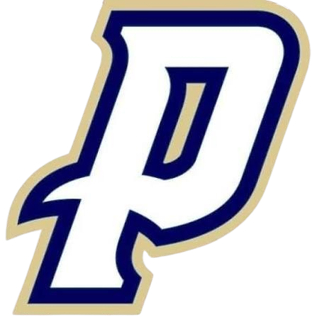

A Tradition of Faith, Family, and Supporting Catholic Education at Our Lady of Providence High School
Created to honor the legacy of Ambrose and Mary Rose Kruer, this fund helps students with financial need experience a values-driven education at Providence[cite: 1].
Endowment value as of August 2026 (growing from $61,000 in 2022)[cite: 1].
Total scholarship money awarded to 20 top students with financial need[cite: 1].
Future fund goal to permanently support 20 or more annual $1,000 scholarships[cite: 1].
"The Ambrose and Mary Rose Kruer Family Scholarship Endowment fund has been a tremendous force for good... in only 5 years, it has already had a significant impact on Providence and the deanery community."
— Coach Miller[cite: 1]
"A scholarship can be the difference that allows a student to continue their education at Providence... giving them the opportunity to remain in a community where faith, academics, character, service, and relationships are at the heart."
— Principal Amy Huber[cite: 1]
Mom and Dad lived their Catholic faith daily through prayer, deep family devotion, and consistent support of Catholic education[cite: 1]. From attending Providence games and galas to gathering generations together for holidays, their legacy of hard work, discipline, and generosity continues to live on through this scholarship fund[cite: 1].